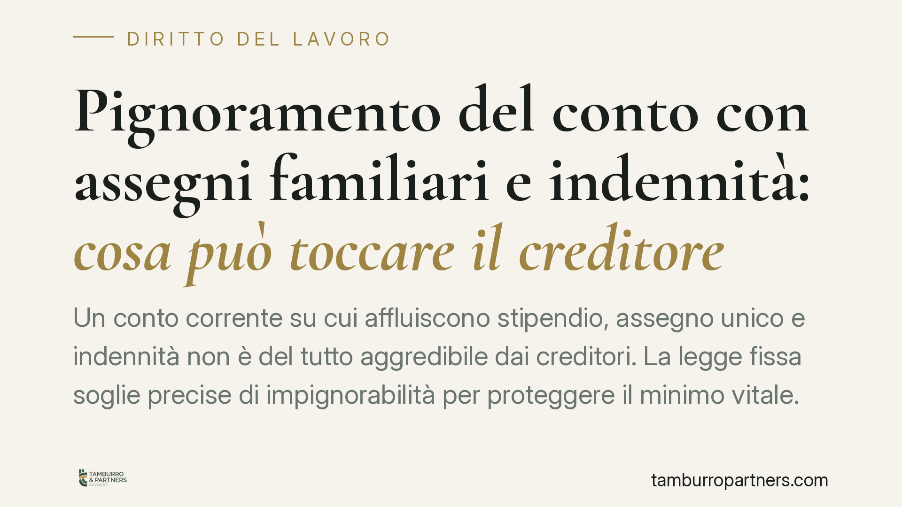

Pignoramento del conto con assegni familiari e indennità: cosa può toccare il creditore
Un conto corrente su cui affluiscono stipendio, assegno unico e indennità non è del tutto aggredibile dai creditori. La legge fissa soglie precise di impignorabilità per proteggere il minimo vitale. Il punto critico, spesso trascurato, è la prova dell'origine delle somme quando sul conto convivono entrate di natura diversa. Vediamo cosa può realmente pignorare il creditore e come reagire.

Il quadro normativo
La disciplina del pignoramento delle somme sul conto corrente ruota attorno all'art. 545 c.p.c. e all'art. 72-ter del d.p.r. 602/1973 per i crediti fiscali.
L'art. 545 c.p.c. distingue due situazioni, secondo il momento dell'accredito. Il settimo comma, introdotto dal d.l. n. 83/2015, stabilisce che le somme dovute a titolo di stipendio, salario o altre indennità relative al rapporto di lavoro, se già accreditate sul conto al momento del pignoramento, possono essere aggredite solo per la parte eccedente il triplo dell'assegno sociale.
Per il 2024 l'assegno sociale INPS è pari a 534,41 euro mensili: il triplo — e quindi la soglia protetta — ammonta a circa 1.603 euro. Al di sotto di tale importo, le somme già accreditate restano impignorabili.
Diverso il caso delle somme accreditate dopo la notifica del pignoramento: qui tornano applicabili i limiti ordinari, ossia la pignorabilità nella misura di un quinto per lo stipendio (art. 545, quarto comma).
Assegno unico e assegni familiari: perché sono protetti
Merita attenzione la natura dell'assegno unico e universale (AUU), disciplinato dal d.lgs. n. 230/2021, e degli assegni al nucleo familiare. Si tratta di prestazioni a carattere assistenziale, destinate al sostegno della famiglia e non alla remunerazione di un'attività.
Proprio questa natura le colloca, secondo l'orientamento prevalente, tra le somme sottratte all'esecuzione ordinaria in quanto assimilabili ai crediti a carattere alimentare e assistenziale richiamati dall'art. 545 c.p.c. È tuttavia opportuno evitare formule assolute: la protezione va argomentata caso per caso, dimostrando l'origine e la destinazione della somma.
Per i crediti dell'Agenzia delle Entrate-Riscossione, l'art. 72-ter del d.p.r. 602/1973 fissa limiti graduati sugli stipendi: un decimo fino a 2.500 euro, un settimo oltre 2.500 e fino a 5.000 euro, un quinto oltre i 5.000 euro mensili.
Il nodo pratico: il conto misto e l'onere della prova
Il problema più insidioso nasce quando sullo stesso conto affluiscono somme di natura diversa: stipendio, assegno unico, indennità di disoccupazione, oltre a eventuali versamenti privati.
In questi casi la protezione non opera in modo automatico. Il debitore deve dimostrare l'origine e la natura delle somme presenti sul conto al momento del pignoramento. In assenza di prova, il rischio è che la banca dichiari disponibili importi che sarebbero stati impignorabili.
La prova si costruisce con la documentazione: estratti conto che evidenzino le causali degli accrediti, cedolini, provvedimenti INPS. È un onere che ricade sul debitore, e va assolto tempestivamente in sede di opposizione.
Alcune pronunce di merito del 2024 (Trib. Bari, Trib. Imperia, Trib. Asti) si sono occupate del tema; i relativi principi vanno però verificati nel testo integrale prima di essere richiamati come precedenti vincolanti.
Implicazioni pratiche
Per chi ha debiti e teme un pignoramento del conto, il messaggio è duplice.
Da un lato, esiste una fascia di risorse che la legge protegge per garantire il sostentamento. Dall'altro, questa protezione non si applica da sola: va fatta valere, spesso davanti al giudice dell'esecuzione.
La distinzione tra vizi determina lo strumento. Se si contesta il diritto del creditore a procedere o l'impignorabilità delle somme, si propone opposizione all'esecuzione ex art. 615 c.p.c. Se il vizio riguarda la regolarità formale degli atti (notifiche, forma del pignoramento), lo strumento è l'opposizione agli atti esecutivi ex art. 617 c.p.c., soggetta a termini più stringenti.
Cosa fare in concreto
- Non movimentare il conto dopo la notifica del pignoramento: prelievi o trasferimenti possono complicare la prova dell'origine delle somme.
- Raccogli subito la documentazione che attesti la natura degli accrediti: cedolini, provvedimenti INPS sull'assegno unico o sull'indennità, estratti conto con causali.
- Verifica il momento dell'accredito: distingui le somme presenti prima del pignoramento (soglia del triplo dell'assegno sociale) da quelle successive.
- Individua il vizio corretto per scegliere tra opposizione ex art. 615 c.p.c. e opposizione ex art. 617 c.p.c., rispettando i termini.
- È opportuno far esaminare l'atto di pignoramento da un professionista prima di reagire, per impostare l'opposizione sui presupposti giusti.
Disclaimer
Contributo informativo a cura di Tamburro & Partners - Avv. Giuseppe Tamburro. Non costituisce parere legale.
Ogni storia di lavoro ha i suoi tempi.
Se gestisci HR e vuoi un confronto su contenzioso, ispezioni o licenziamenti, scrivi allo studio. Ti rispondiamo entro un giorno lavorativo.